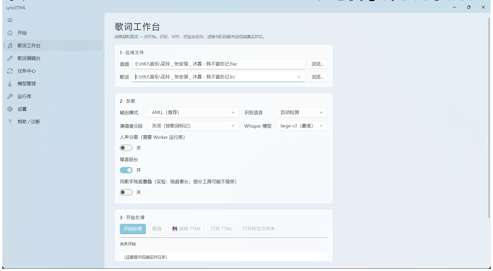
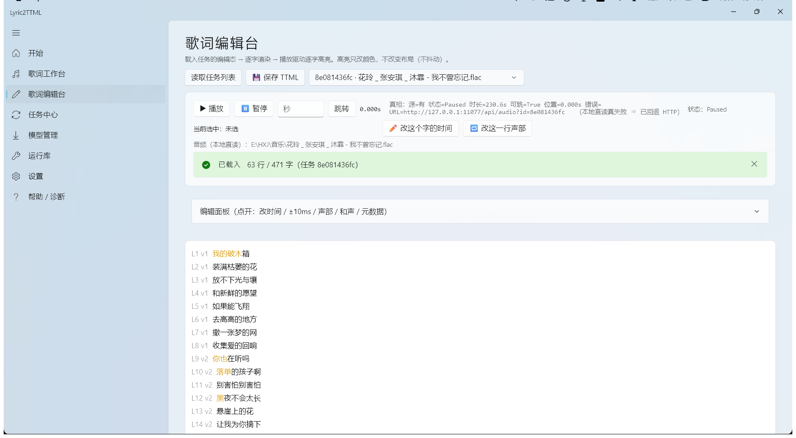
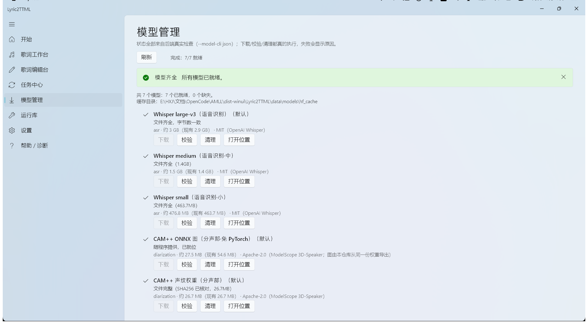
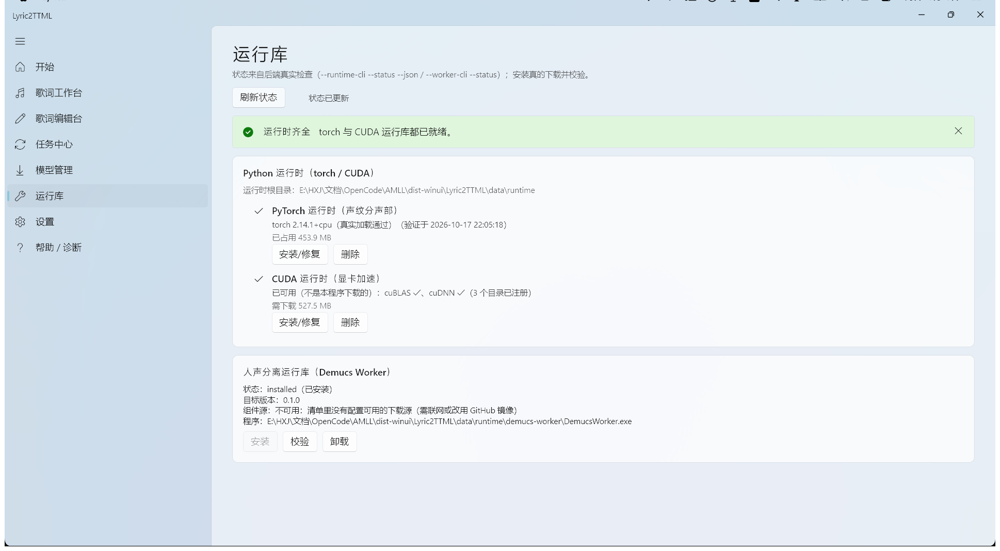

把「不停点点点」整段删掉
语音识别先听写，动态规划把定下来的字钉进音频的每一秒。原来最繁重的点击与试听，交给程序自动跑。
自动化1 小时 → 几秒
普通歌词（TXT / LRC）＋ 歌曲音频，自动生成 Apple Music / AMLL 逐字 TTML。
Whisper + 实验性 TIFA 双引擎、和声 x-bg、逐字编辑与规范自检 —— 一条流水线跑完。
一首四分钟的歌，六十多行、四百七十多个字，每个字都要有开始和结束。手工对轴要反复暂停、听、标记，最后往往是凌晨两点。
语音识别先听写，动态规划把定下来的字钉进音频的每一秒。原来最繁重的点击与试听，交给程序自动跑。
默认 faster-whisper + DP；实验 TIFA 歌声音素对齐逐字更准。有 LRC 时按乐句切片，把歌词本身当提示词回喂；长间奏会裁掉尾字拖音，保留三点倒数 gap。
CAM++ 声纹把每一行分给不同演唱者；和声标记时 TIFA 主唱 + Whisper x-bg，没有标记时可用 Whisper 自动转录和声（实验）。括号和声自动变成 x-bg 层。
不需要 API Key，音频不出本机。内置编辑台：播放逐字高亮、±10ms 改时间、改声部、改和声与文本；改动只写草稿，点保存才动正式文件。
从歌词文本到可直接播放的 TTML，中间是五个确定性步骤。
faster-whisper 给出每个字的大概时间与置信度。
动态规划在「确定的文本」与「模糊的时间块」间找最小代价路径。
CAM++ 声纹把每行变成向量，聚成 N 簇，判断这句谁在唱。
能量 + 音高连续性判断尾音终点，把被下一行截断的尾字接回去。
时间格式、父子包含、同歌手不重叠、key 连续、元数据必填项，全部校验。
开始 / 歌词工作台 / 歌词编辑台 / 任务中心 / 模型管理 / 运行库 / 设置 / 帮助诊断。




首次按引导下载语音模型（约 3 GB）与 CUDA 运行库（527 MB），之后完全离线可用。
winui\Lyric2TTML.exe